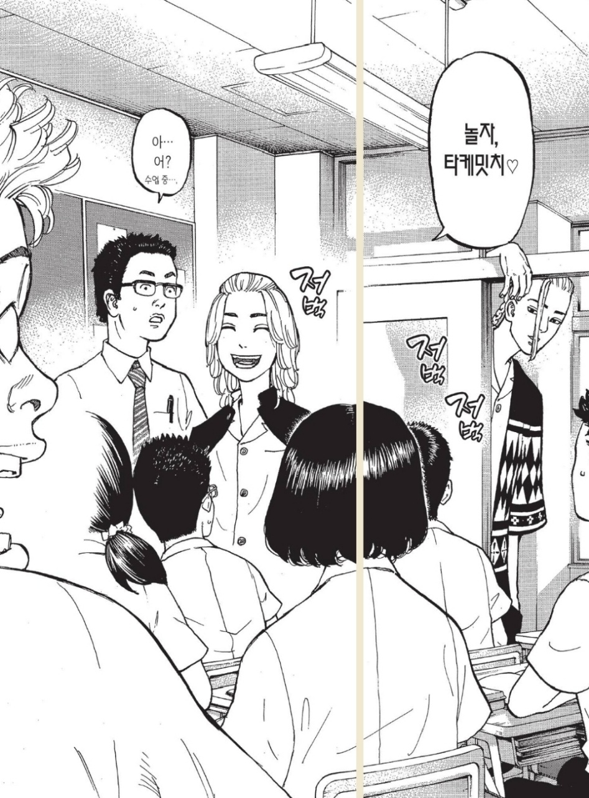
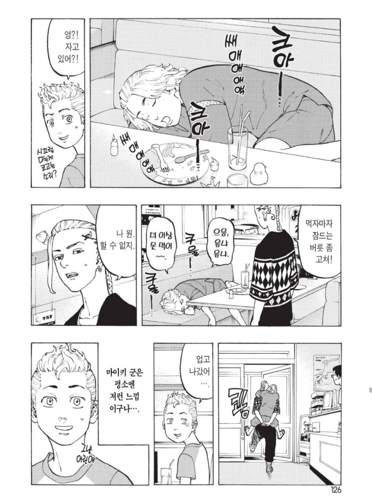
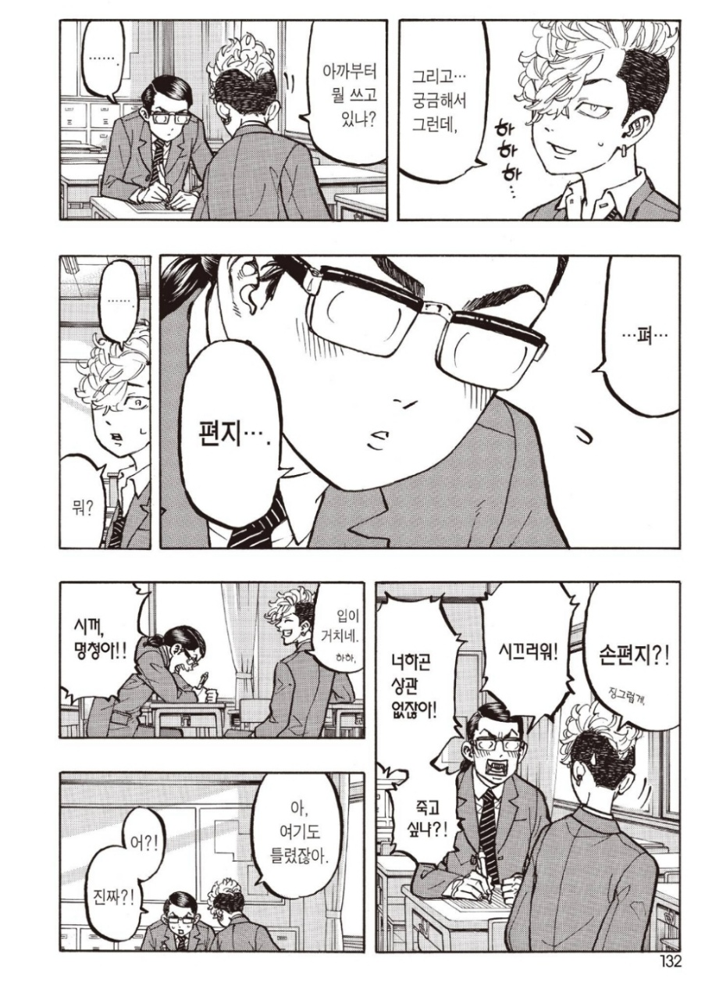
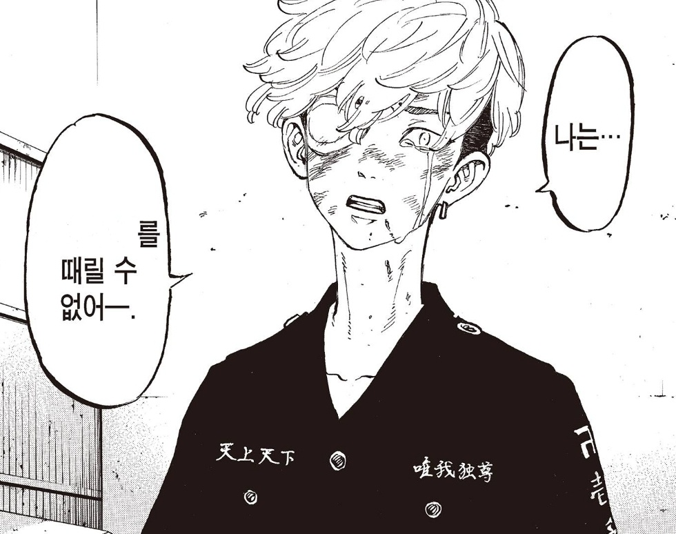

너네가 친구면 난 친구 없어.
스포가 안 되는 선에서의 짤방들
키갈해! 키갈해! 키갈해!

친구한테는 하트 안 붙여 친구한테는 그런 말 안 해
너네 사귀니?

보통 저러면 버리지 않나

공부 잘 하는 양아치 공부 못하는 범생이(?)

어흐흐흑흐흐흑..흐흡끅..흑
아아아악!!!아으윽..ㅓ허흡ㄱ끼흑..
머리 박박 치는중
그래서 만들었습니다
짜잔
서사와 캐미가 장난 아닌데 스포라서 차마 소개를 못하겠습니다
캐디와 서사에 환장한다면 제발 한 입만 먹어봐요